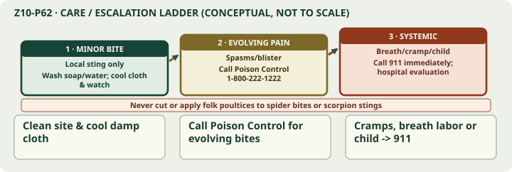

Z10-P62 · Wilderness medicine · New manuscript
Evaluate spider bites and scorpion stings with Poison Control guidance
Separate minor arthropod bites from systemic neurotoxic or necrotic envenomations requiring Poison Control or EMS care.
When it applies · Suspected black widow, brown recluse, or scorpion stings/bites causing escalating pain, cramps, or systemic illness.
Equipment · Soap and safe water, cool compress, Poison Control (1-800-222-1222 in U.S.) or 911 access, and safe photo if already dead.

Actions
- Wash the bite site gently with soap and safe water, apply a clean cool damp cloth (not bare ice) for local discomfort, elevate the limb if comfortable, and keep the person resting calmly.[M13, M06]
- Call 911 immediately for breathing difficulty, throat/facial swelling, severe chest/abdominal muscle cramping, uncontrollable pain, confusion, or young children/older adults showing systemic symptoms.[M13, M08, T02]
- For evolving local pain, muscle spasms, blistering/darkening ulcers, or uncertain species exposure, contact Poison Control (1-800-222-1222) or seek clinical evaluation without applying improvised poultices or cutting the skin.[M13, M16]
Failure recognition · Ignoring severe abdominal rigidity and sweating after a widow spider bite or attempting home incision of a blistered bite wound.[M13, M16]
Verify · Confirm site washed cleanly, symptom progression timed, and Poison Control or EMS contacted for any systemic or worsening local signs.[M13, M16]
Stop or change course · Severe muscle cramps, trouble breathing, spreading blistering/ulceration, or pediatric systemic symptoms mandate urgent hospital care.[M13, T02]
Evidence and editorial notes
- M06 · NIH / MedlinePlus · Wounds and Injuries (current web edition)
- Section: Minor Wound Cleaning, Protection, and Infection Red Flags · Conditions: Superficial cuts, scrapes, and abrasions with potable water available
Support: Rinse minor wounds thoroughly with clean potable water, cover with a clean sterile dressing, and monitor for worsening redness, warmth, swelling, pus, red streaks, or fever.
Limitations: Deep punctures, animal bites, retained foreign bodies, or heavily contaminated wounds require clinical evaluation and tetanus review. · Conflicting evidence: None; separates clean potable rinsing from harsh chemical wound scrubbing.
Editorial note: Anchors field wound hygiene and infection escalation cards. · Specialist reviewer: Wilderness medicine and wound care
Primary source · checked 2026-11-24 - M08 · NIH / MedlinePlus · Anaphylaxis (current web edition)
- Section: Recognizing Anaphylaxis and Prescribed Epinephrine Use · Conditions: Sudden severe allergic reaction (hives, facial/airway swelling, wheezing, dizziness, vomiting)
Support: Call 911 immediately for suspected anaphylaxis and assist the patient in using their own prescribed epinephrine auto-injector per its label; symptoms can rebound requiring hospital observation.
Limitations: Lay responders never prescribe or supply unprescribed epinephrine or substitute antihistamines for emergency activation. · Conflicting evidence: None; aligns with AAAAI/MedlinePlus guidance.
Editorial note: Separates assisting with a patient's prescribed auto-injector from lay prescribing. · Specialist reviewer: Allergy/immunology and EMS
Primary source · checked 2026-11-24 - M13 · NIH / MedlinePlus · Spider and Arthropod Bites (current web edition)
- Section: Venomous Snake and Arthropod Bite Boundaries · Conditions: Suspected venomous snakebite or severe spider/scorpion sting
Support: Keep the person calm and still, remove rings/tight items near the bite, position calmly per dispatcher guidance, and transport promptly to emergency care; never cut the wound, suck venom, apply ice, or use a tourniquet.
Limitations: Antivenom is a hospital clinical intervention; species visual memory should never delay evacuation or risk a second bite. · Conflicting evidence: Refutes legacy cut-and-suck and constricting-band folklore.
Editorial note: Hard-stop non-invasive snakebite and venomous-bite protocol. · Specialist reviewer: Medical toxicology and wilderness medicine
Primary source · checked 2026-11-24 - M16 · National Capital Poison Center · Poison Control Emergency Guidance (current web edition)
- Section: Emergency Poison Help Guidance and Substance Documentation · Conditions: U.S. non-life-threatening or evolving poisoning exposure
Support: Save the container, plant sample (handled safely), or chemical label for Poison Control and EMS; follow exact dispatcher or toxicology specialist instructions without giving home remedies.
Limitations: Requires phone/comms access; remote settings require early evacuation for unknown toxic ingestions. · Conflicting evidence: None; reinforces Poison Control hotline and container preservation.
Editorial note: Guides documentation and anti-folklore poison response in Z10. · Specialist reviewer: Poison control and emergency medicine
Primary source · checked 2026-11-24 - T02 · American Red Cross · First Aid Steps (current web edition)
- Section: First Aid Steps > Call 9-1-1 · Conditions: Lay emergency response to unresponsiveness, abnormal breathing or severe bleeding
Support: Activate EMS and get needed equipment. Follow dispatcher directions and act within training.
Limitations: Remote locations may delay EMS arrival, requiring sustained stabilization after activation. · Conflicting evidence: None; aligns with NPS-E.
Editorial note: Mandates early emergency activation and dispatcher adherence. · Specialist reviewer: EMS and wilderness medicine
Primary source · checked 2026-11-24
Source lineage · NIH MedlinePlus Spider Bites and Poison Control; new manuscript · Classification · New manuscript.